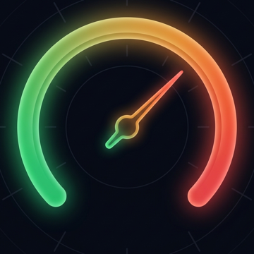
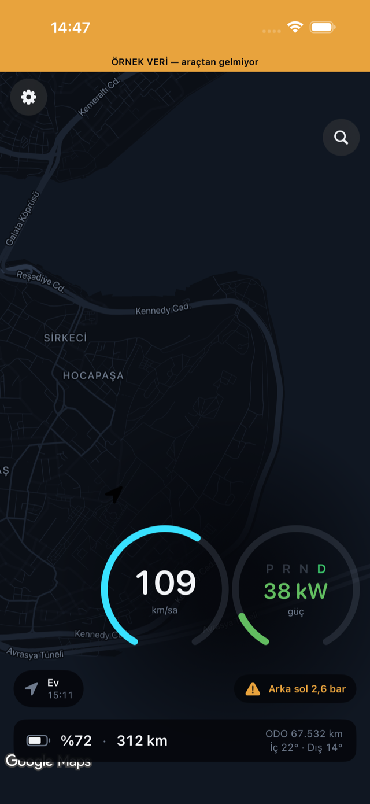
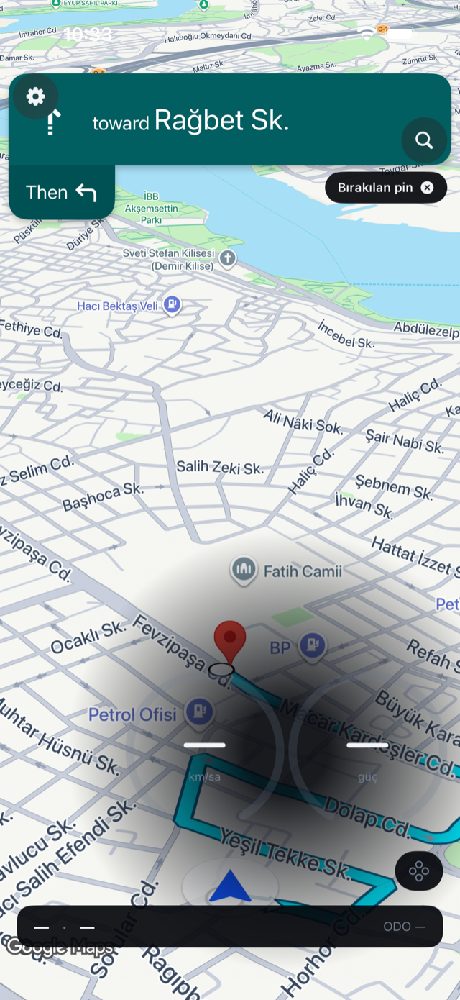
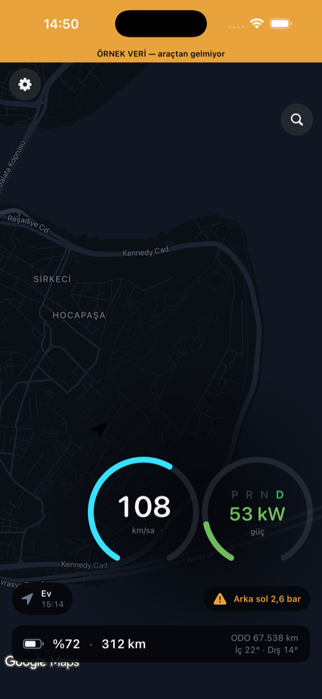
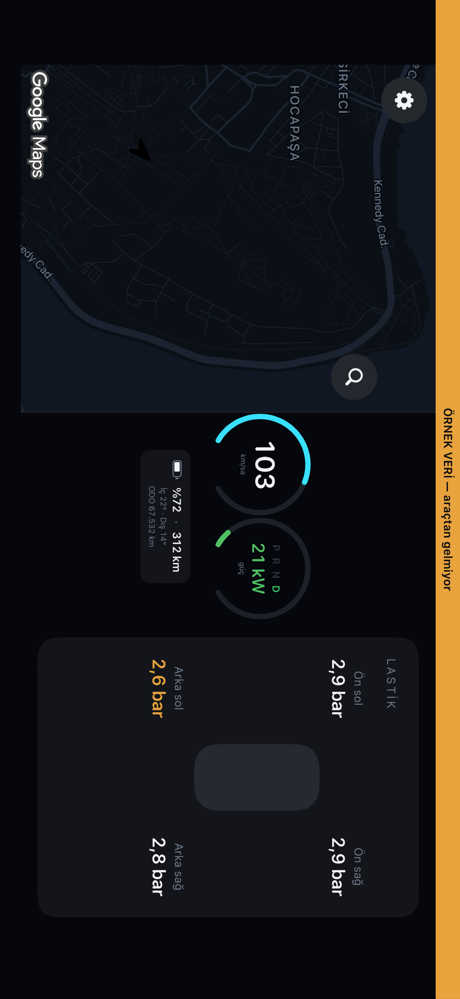

KADRA APP STORE — YAKINDAKadra, elektrikli aracının verilerini canlı bir gösterge paneline dönüştürür. Aracına doğrudan Bluetooth ile bağlanır — arada internet, bulut ya da başka biri yoktur.

Navigasyon
Google destekli adım adım navigasyon: dönüş şeridi, sesli tarif ve trafiğe göre rota. Aracında bir hedef seçtiğinde Kadra kendiliğinden yönlendirmeye geçer; istersen uygulama içinden arayıp yol üstü şarj istasyonlarına tek dokunuşla rota çizersin.
Varışta pil tahmini rozeti, aracın kendi hedefine giderken menzilinin yetip yetmeyeceğini yol boyunca söyler.

Kadran stilleri
Klasik, Şerit, Gradyan ve Kapsül: dört kadran stili, koyu ya da açık tema. Kadranı parmağınla sağa, sola veya ortaya taşı; ana ekran ve kilit ekranı widget'larıyla pil ve menzil hep gözünün önünde.

Yatay kokpit

Yan panelde: seyir, lastik, araç ve EKO kartları — dokundukça değişir.
Neler gösterir
Anlık hız ve güç, geri kazanım izi, batarya yüzdesi, kalan menzil, vites, kilometre, iç–dış sıcaklık ve dört lastiğin ayrı ayrı basıncı (bar veya psi).
Araç şarja girince kilit ekranında canlı kart ve Dynamic Island'da yüzde: şarj hızı, hedef sınır ve kalan süre — telefonu açmadan.
Şarj ve ön iklimlendirme programları ile anlık tüketim (Wh/km) ve sürüş verimliliği skoru — ikisi de ücretsiz.
Kadra araca komut gönderemez. Kapı açamaz, aracı süremez, ayar değiştiremez — yalnızca aracın paylaştığı bilgileri okur. Bu bir tasarım tercihi değil, kullandığı yetkinin sınırı.
Gizlilik
Kadra'nın sunucusu yok. Kayıt olmazsın, şifre girmezsin. Harita açıkken konumun yalnız harita, rota ve navigasyon için Google'a iletilir; haritayı kapatırsan uygulama sıfır ağ trafiğiyle çalışır. Denemesi kolay: haritayı kapat, telefonu uçak moduna al — Kadra çalışmaya devam eder.
Uygulama arka plana geçtiğinde sorgular durur. Uyuyan araç, sen istemedikçe uyandırılmaz.
Sık sorulanlar
Sorun, hata bildirimin veya önerin için yaz: tunca.bildik@gmail.com
Yanıt genellikle birkaç iş günü içinde verilir.